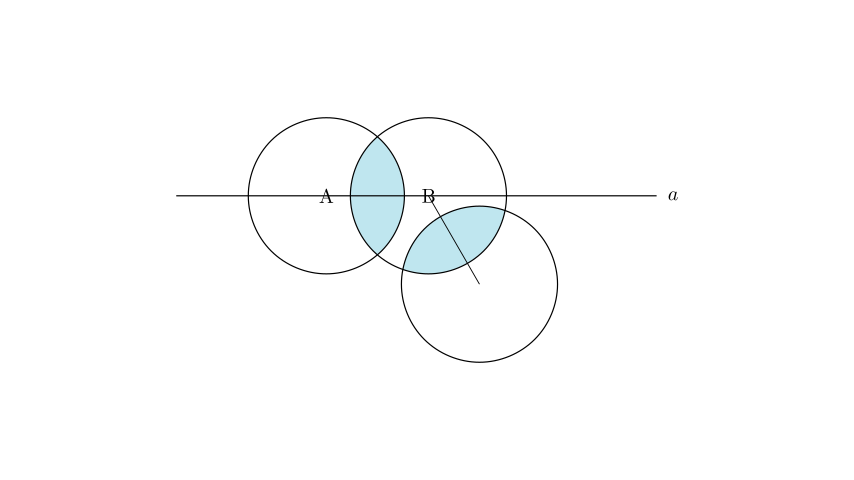
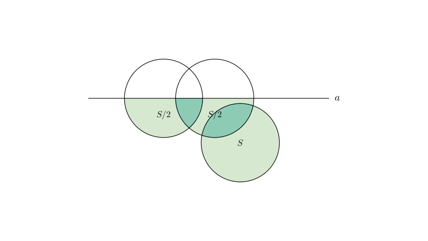

Problem Statement: There are three circles, each with an area of $S$, placed on a table (as shown in the diagram). The total area covered on the table is $2S + 2$, and the areas of the two overlapping regions are equal. Line $a$ passes through the centers of two circles, A and B. If the area covered by the circles below line $a$ is 9, determine the value of $S$.
Options: A. 5 B. 5.5 C. 6 D. 6.5
Solution Approach: We will solve this using the Principle of Inclusion-Exclusion for areas. 1. First, we express the total covered area in terms of $S$ and the overlap area $x$ to find a relationship between them. 2. Next, we analyze the area covered below line $a$. Since line $a$ passes through the centers of circles A and B, it bisects them. Based on the diagram and problem context, circle C lies entirely below line $a$. 3. We will set up an equation for the area below the line and solve the system of linear equations to find $S$.

Step 1: Analyze the Total Covered Area
Let the area of each circle be $S$. Let the area of the overlap between Circle A and Circle B be $x$. The problem states that the overlapping regions are equal, so the overlap between Circle B and Circle C is also $x$. There is no common overlap between all three circles (A and C do not touch).
Using the formula for the area of a union of sets: $$ \text{Total Area} = \text{Area}(A) + \text{Area}(B) + \text{Area}(C) - \text{Overlap}(A,B) - \text{Overlap}(B,C) $$ $$ \text{Total Area} = S + S + S - x - x $$ $$ \text{Total Area} = 3S - 2x $$
We are given that the total covered area is $2S + 2$. Equating these expressions: $$ 3S - 2x = 2S + 2 $$ Rearranging to solve for $S$ in terms of $x$: $$ S - 2x = 2 \implies S = 2x + 2 \quad \text{--- (Equation 1)} $$

Step 2: Analyze the Area Below Line $a$
Now we consider the area covered below the horizontal line $a$.
Step 3: Formulate the Equation
The total area covered below the line is the sum of the individual parts minus the overlaps (to avoid double counting): $$ \text{Area}{\text{below}} = (\text{A}{\text{below}}) + (\text{B}{\text{below}}) + (\text{C}{\text{below}}) - (\text{Overlap AB}{\text{below}}) - (\text{Overlap BC}{\text{below}}) $$
Substituting the values: $$ 9 = \frac{S}{2} + \frac{S}{2} + S - \frac{x}{2} - x $$ $$ 9 = 2S - 1.5x \quad \text{--- (Equation 2)} $$
Step 4: Solve the System of Equations
We have a system of two equations: 1. $S = 2x + 2$ 2. $2S - 1.5x = 9$
From Equation 1, we can express $x$ in terms of $S$: $$ 2x = S - 2 \implies x = \frac{S - 2}{2} = 0.5S - 1 $$
Substitute this expression for $x$ into Equation 2: $$ 2S - 1.5(0.5S - 1) = 9 $$ $$ 2S - 0.75S + 1.5 = 9 $$ $$ 1.25S = 7.5 $$
Now, solve for $S$: $$ S = \frac{7.5}{1.25} $$ To simplify, multiply numerator and denominator by 100: $$ S = \frac{750}{125} $$ $$ S = 6 $$
Verification: If $S = 6$: * $x = 0.5(6) - 1 = 2$. * Total Area = $3(6) - 2(2) = 18 - 4 = 14$. * Check given total area: $2S + 2 = 2(6) + 2 = 14$. (Matches) * Area Below = $2(6) - 1.5(2) = 12 - 3 = 9$. (Matches given value)
Final Answer: The value of $S$ is 6.
Therefore, the correct option is C.